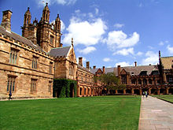

В состав университета входят 150 исследовательских центров. Здесь базируется крупная лаборатория по наноисследованиям - Nanostructural Analysis Network Organization. ВУЗ получает крупнейшие гранты на исследования, результаты которых значимы не только в пределах Австралии. При Сиднейском университете основан Центр обучения английскому языку (CET), предоставляющий студентам доступ к ресурсам и материальной базе Центра. При высоких стандартах преподавания студенты гарантированно овладевают английским языком по программам профессионального развития, участвуя в международных конференциях по выбранной специализации. Также имеется возможность участия в программах по языковому обмену. Качество обучения, успешность после окончания учебы и богатые человеческие и технические ресурсы способствуют поднятию рейтинга Университета. На территории кампуса расположены также лаборатории, музеи, галереи искусств, мастерские и научные станции. С учетом динамичного опыта системы образования в Австралии, абитуриенты вправе выбирать как факультет, так и время, и продолжительность обучения. В некоторых областях можно получить «двойную степень», например, в области ИТ, менеджмента и права, а по программе Industry Placement Program студенты могут по окончанию учебы получить работу в ведущих компаниях в рамках своей специальности. Им предоставляется возможность работы на различных фермах, в клиниках, больницах и научных лабораториях в рамках учебы, а также доступ к учебным сообществам и международным аккредитациям.
Концепция изучения любой проблемы с точки зрения своей дисциплины лежит в основе программы обучения ВУЗа. Программа обучения состоит из комплекса лекций, семинаров и практических работ. Занятия проводятся в виде семинаров, для которых студенты предварительно готовят материалы по заданной теме и обсуждают их на занятиях в группе или напрямую с преподавателем. На каждом занятии используются презентационные материалы, а вывод строится на основании освоения материала студентами. Этап обучения считается завершенным после сдачи всех необходимых эссе и курсовых работ, презентаций и экзаменов. Каждый факультет устанавливает свои правила по сдаче минимума. Программа Сиднейского университета включает 4-бальную систему оценки знаний студентов с итоговыми результатами зачета (Pass) или кредитного балла (Credit). Лекционная программа обучения силами приглашенного лекторского состава предлагает дополнительные знания по выбранным специальностям.
Специалисты из нашего университета оказывают полное курирование при подаче документов на следующие грантовые программы:
| Актуальные программы 2020 - 2021гг | ||||
|---|---|---|---|---|
| Наименование | Степень | Страны | Сроки подачи | Стоимость услуги |
| DAAD | Магистратура, PhD | Германия | октябрь - ноябрь | 890USD |
| Fulbright | Магистратура | США | 1450USD | |
| Chevening | Магистратура | Великобритания | август - ноябрь | 1540USD |
| Erasmus Mundus | Магистратура | Европа | октябрь - декабрь | 1180USD |
| Грант правительства Китая | Бакалавриат, магистратура | Китай | февраль - март | 990USD |
| Грант правительства Франции | Бакалавриат, магистратура | Франция | декабрь - февраль | |